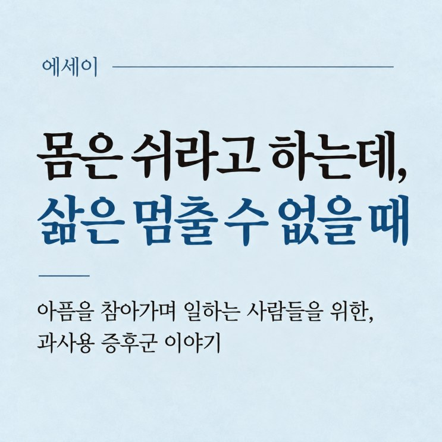

몸은 쉬라고 하는데, 삶은 멈출 수 없을 때
아픔을 참아가며 일하는 사람들을 위한, 과사용 증후군 이야기
목차 보기

"원장님, 일을 좀 쉬면 나을까요?"
진료실에서 자주 듣는 질문입니다. 팔꿈치가 아픈 식당 사장님, 하루 종일 서서 일하는 미용사, 무거운 짐을 나르는 택배기사, 손목이 아픈 주부까지. 크게 다친 적은 없는데 근육과 힘줄, 관절에 통증이 생긴 분들이 많습니다.
그런 분들께 제가 "당분간은 일을 좀 줄이셔야겠습니다"라고 말씀드리면, 돌아오는 대답은 대개 비슷합니다.
"쉬면 좋죠. 그런데 일을 안 하면 먹고살 수가 없잖아요."
저는 의학적으로 무엇이 필요한지 알고 있습니다. 하지만 환자가 처한 현실도 알고 있습니다.
몸은 쉬어야 낫는데, 삶은 그 사람에게 쉴 시간을 허락하지 않습니다.
늘 하던 일인데, 왜 갑자기 아플까요
"제가 이 일을 하루 이틀 한 것도 아닌데 왜 이제 와서 아픈 걸까요?"
20년 동안 식당 일을 하신 분, 30년 넘게 농사를 지으신 분도 같은 질문을 하십니다.
이때 설명이 되는 개념이 '과사용 증후군'입니다.
우리 몸의 근육과 힘줄, 관절은 매일 일정한 부하를 견딥니다. 적절하게 사용하면 그 자극에 적응하고, 충분히 쉬면 다음 활동을 준비합니다. 운동을 꾸준히 하면 근육이 강해지고 뼈가 부하에 맞게 구조를 바꾸는 것이 그 예입니다.
문제는 사용량이 지나치거나 회복할 시간이 부족할 때 생깁니다.
과사용 증후군은 조직에 가해지는 부하와 그것을 감당하고 회복하는 능력 사이의 균형이 무너진 상태입니다.
그래서 일의 양이 같아도 어느 날부터 아플 수 있습니다.
나이가 들며 근력이 줄고, 잠이 부족하고, 회복 능력이 떨어지면 예전에는 거뜬했던 일이 버거워집니다. 일은 그대로인데 몸이 감당할 수 있는 능력이 줄어든 것입니다.
통증이 사라지는 것은 치료의 끝이 아닙니다
통증은 몸이 보내는 경고입니다.
"이제 조금 쉬어야겠습니다", "지금 너무 무리하고 있습니다"라는 신호입니다.
하지만 생계를 책임지는 분들에게 이 신호는 따르기 쉬운 조언이 아닙니다.
팔꿈치가 아프다고 식당 문을 닫을 수 없으니, 하루를 버티고 또 하루를 버팁니다.
처음엔 일할 때만 아프던 것이 쉴 때도 아프고, 밤에 잠을 설칠 정도가 되어서야 병원을 찾으십니다.
저는 이런 환자분들을 볼 때마다 안타깝습니다.
건강을 소홀히 해서 아픈 것이 아니라, 살아가기 위해 몸을 쓰다가 그 몸이 아파진 분들이기 때문입니다.
이분들에게 진통제는 참 고마운 약입니다.
심한 통증은 수면과 활동, 회복운동까지 방해하니 필요할 때는 약의 도움을 받는 것이 합리적입니다.
다만 통증이 줄었다고 손상된 조직이 회복된 것은 아닙니다. 힘줄이 감당하기 어려운 부하를 계속 받는 상황에서 통증만 가려진다면 근본 문제는 그대로 남습니다.
제가 안타까운 것은 진통제가 아니라, 통증이 사라지는 것을 치료의 끝이라고 여기는 태도입니다. 왜 아파졌는지, 같은 일을 계속하려면 몸을 어떻게 회복시켜야 하는지가 빠져 있으면 통증은 다시 찾아옵니다.
일을 줄일 수 없다면, 몸의 능력을 키워야 합니다
과사용 증후군을 다루는 방법은 두 가지입니다.
하나는 몸에 가해지는 부담을 줄이는 것이고,
다른 하나는 몸이 그 부담을 감당하는 능력을 높이는 것입니다.
둘을 함께 하는 것이 가장 좋지만, 일을 줄이기 어려운 분에게는 두 번째가 더 중요해집니다.
저는 이것을 위해 두 가지를 강조합니다.
첫째는 잠입니다.
수면 중에 우리 몸은 낮 동안 지친 기능을 조절하고, 면역과 호르몬의 균형을 맞추고, 손상된 조직을 복구합니다. 그런데 몸을 많이 쓰는 분일수록 일찍 출근하고 늦게 퇴근하느라 잠이 부족합니다. 그래서 저는 다른 무엇보다 잠자는 시간을 먼저 확보하시라고 말씀드립니다.
둘째는 지친 몸의 회복을 돕는 것으로, 한의학에서는 보약이 이 역할을 해 왔습니다.
과로로 허약해진 몸을 살필 때 보기(補氣), 보혈(補血), 보간신(補肝腎)의 원리를 활용합니다.
- 보기(補氣) 지친 기운을 북돋우는 것입니다. 일을 하는 데도, 회복하는 데도 에너지가 필요합니다.
- 보혈(補血) 몸을 충분히 영양하는 것입니다. 손상된 조직이 회복되려면 산소와 영양, 새로운 단백질을 만드는 과정이 필요합니다.
- 보간신(補肝腎) 근육과 힘줄, 뼈의 건강을 돌보는 것입니다. 이 조직들은 끊임없이 합성과 분해를 거치며 손상을 복구하고 새로운 부하에 적응합니다.
물론 이 개념들이 현대 생리학의 특정 기능과 정확히 일치한다는 뜻은 아닙니다. 다만 한의학이 오래 중시해 온 기력과 근골의 건강을 오늘의 생리학 관점에서 다시 생각해 볼 수 있다는 이야기입니다.
낮에는 어쩔 수 없이 몸을 써도, 밤에는 충분히 쉬게 하고 지친 몸을 돌보는 것.
일을 줄일 수 없는 분께는 이것이 가장 현실적인 회복의 출발점입니다.
제가 침을 놓는 이유, 그리고 치료실 밖의 치료
저는 이런 환자분들께 침치료와 적절한 약침치료를 합니다.
단순히 통증을 없애려는 것만은 아닙니다. 아파서 움직이지 못하던 분이 조금 더 편안하게 움직일 수 있어야 적절한 운동을 시작할 수 있고, 근육과 힘줄이 다시 부하에 적응할 기회도 생기기 때문입니다. 그런 의미에서 침치료는 적절한 재활과 결합될 때 회복을 돕는 유용한 도구가 된다고 생각합니다.
하지만, 침을 맞는 시간은 길어야 수십 분이고
일터에서 몸을 쓰는 시간은 여덟 시간, 열 시간, 때로는 그 이상입니다.
그래서 일상에서 할 수 있는 작은 변화를 실천하는 것도 치료의 일부라고 생각합니다.
- 같은 동작을 오랫동안 반복한다면 중간중간 잠깐씩 쉬기
- 무거운 물건을 들 때 몸 전체의 힘을 효율적으로 쓰기
- 그리고 무엇보다 충분히 자고, 몸이 회복할 시간을 마련하기
거창하지 않지만 이런 변화가 쌓이면 몸의 부담이 줄고 회복이 빨라집니다.
어떤 환자분께는 한 번의 침치료보다 이런 습관이 장기적으로 더 중요하기도 합니다.
제가 바라는 것은 침을 맞는 동안만 덜 아픈 몸이 아니라, 치료가 끝난 뒤에도 일상을 견뎌내는 몸입니다.
쉬라는 말 대신 해주고 싶은 말
진료실에서 "쉬셔야 합니다"라고 말하기는 어렵지 않습니다.
어려운 것은 그분이 왜 쉴 수 없는지를 이해하는 일입니다.
자녀의 학비를 벌어야 하는 분, 가족의 생활비를 책임지는 분, 하루만 문을 닫아도 그날 수입이 사라지는 분께 무조건 일을 그만두라고 할 수는 없습니다.
그렇다고 몸의 신호를 계속 무시하라고 할 수도 없습니다.
같은 팔꿈치 통증도 취미로 테니스를 치는 사람과 하루 종일 무거운 프라이팬을 드는 사람에게는 그 의미가 다릅니다.
병은 같아도 그 병을 안고 사는 삶이 다르기 때문입니다.
저는 의학이 병을 치료하는 기술이면서 아픈 사람의 삶을 이해하는 일이기도 하다고 믿습니다.
그래서 저는 환자와 함께 현실적인 방법을 찾으려 합니다.
가능한 만큼 부담을 줄이고, 통증을 조절하고, 약해진 부분을 조금씩 회복시키는 것.
당장 모든 일을 멈출 수 없더라도 몸이 회복할 기회를 조금씩 만들어 가는 것입니다.
기계는 오래 쓰면 닳아 없어지지만, 우리 몸은 적절한 휴식과 영양과 시간이 주어지면 스스로를 유지하고 복구하는 능력이 있습니다.
환자분들이 그 능력을 믿고 자신의 몸을 조금 더 아끼셨으면 합니다.
일하는 것도, 가족을 돌보는 것도, 삶을 즐기는 것도 결국 그 몸이 있어야 가능하니까요.
그래서 저는 오늘도 침을 놓습니다.
아픈 곳을 조금이라도 편안하게 해 드리고,
언젠가는 아픔을 참아가며 일하지 않아도 되는 날이 오기를 바라면서요.
한방재활의학과 전문의 · 한의학박사 박장우